Este manual describe de manera narrativa las principales funcionalidades del sistema de gestión de Almacenes, organizadas por secciones de los menus del sistema.
A: Inicio de Sesión
Ingrese al sistema utilizando las credenciales asignadas por el Responsable de Almacenes. Una vez dentro, tendrá la posibilidad de actualizar su contraseña para garantizar mayor seguridad en el acceso.
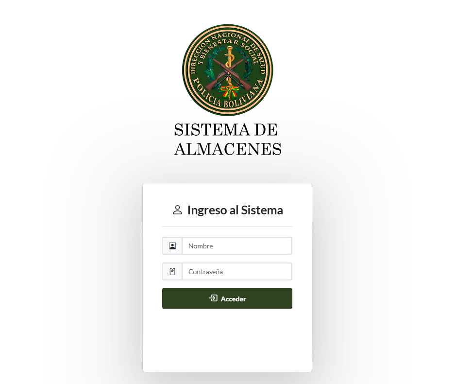
B: Migración de Datos
Seleccione en el Menu de la izquierda "Base de Datos"
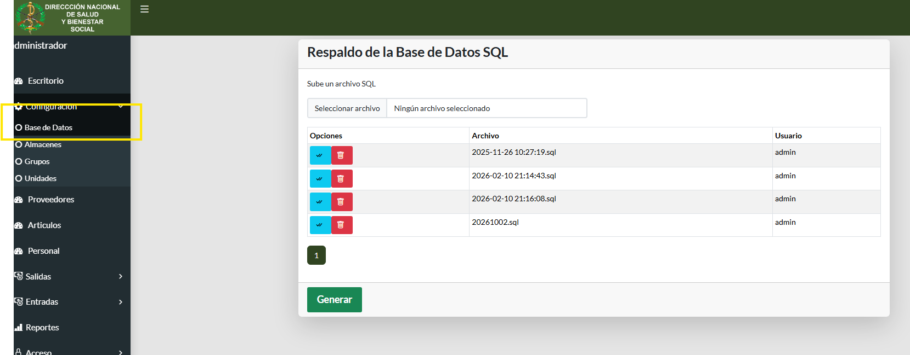
El sistema permite generar una copia de seguridad del sistema de Almacenes mediante el botón Generars. Al ejecutar esta acción, descargara un archivo SQL para resguardo institucional.
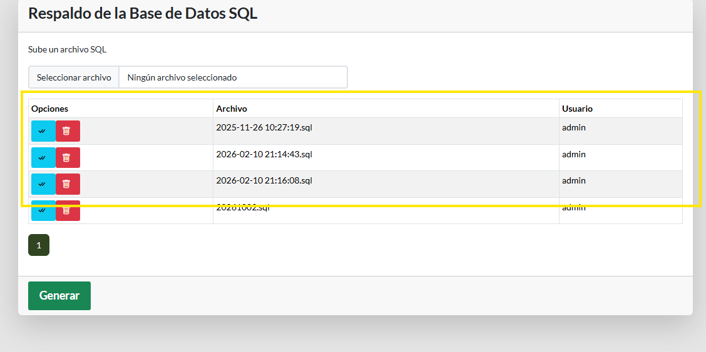
Importante: esta operación genera un registro con los datos de la fecha y hora para restaurar posteriormente.
El sistema permite aplicar una copia de seguridad previamente generada mediante el botón celeste en la lista . Al ejecutar esta acción, se reemplazarán por completo los registros de articulos, almacen, responsables y notas con el contenido de la copia seleccionada.
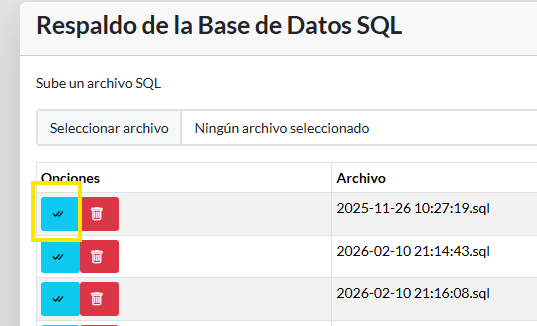
Importante: esta operación afecta únicamente la información gestionada dentro de la plataforma actual.
C: Gestión de Almacenes
Seleccione en el Menu de la izquierda "Almacenes"
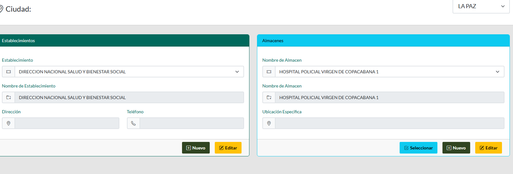
El botón Seleccionar activa el almacen, el almacen selecciona actuara en todo el sistema el presonal y articulos solo veran del almacen seleccionado Nuevo cambiará de vista para crear y editar nueso establecimientos y almacenes.
D: Gestión de Partidas
Seleccione en el Menu de la izquierda "Partidas"
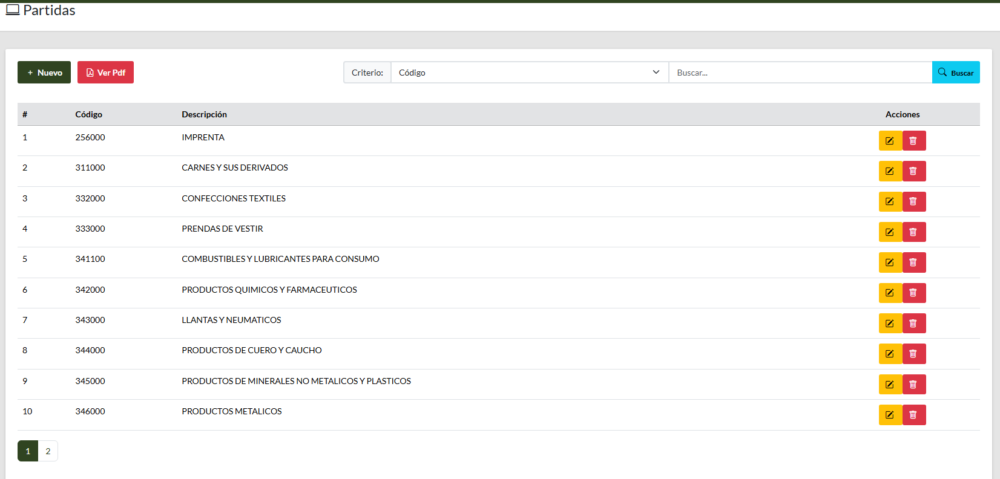
puede buscar con el número de partida, o buscarlos por nombre con el botón buscar, en la parte izquierda tiene los botones Nuevo y Ver Pdf con estos botones puede crear una nueva partida y ver el resumen de partidas en pdf
E: Gestión de Unidades
Seleccione en el Menu de la izquierda "Unidades"
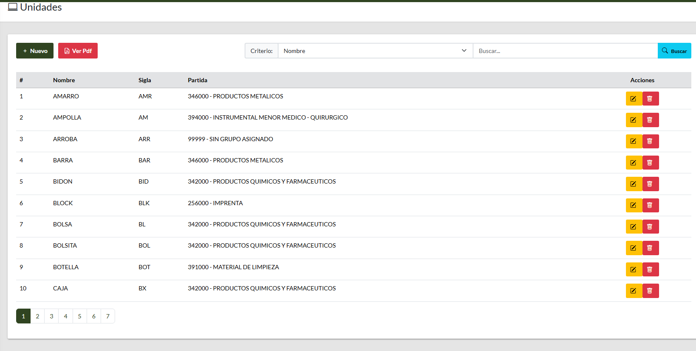
puede buscar con el número de unidad, o buscarlos por nombre con el botón buscar, en la parte izquierda tiene los botones Nuevo y Ver Pdf con estos botones puede crear una nueva unidad y ver el resumen de unidades en pdf
F: Gestión de Provedores
Seleccione en el Menu de la izquierda "Provedores"
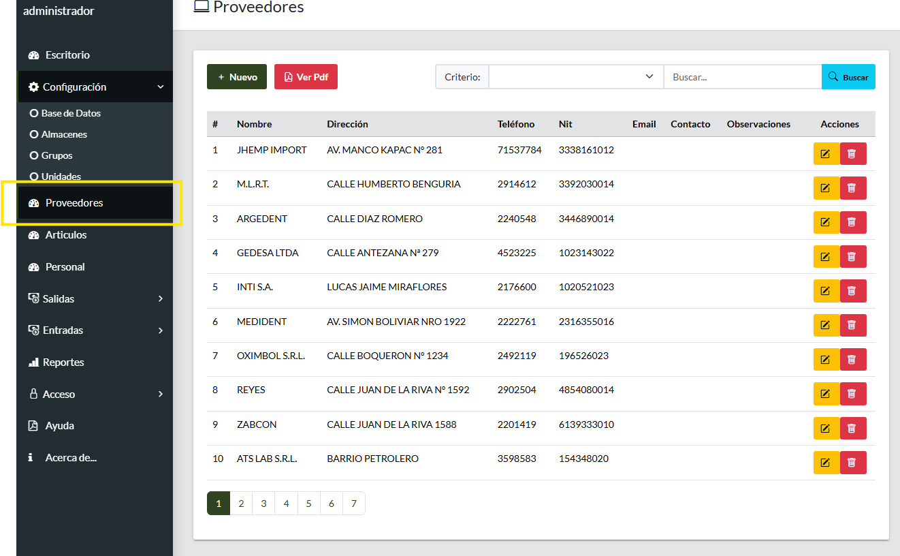
puede buscar con el número de provedor, o buscarlos por nombre con el botón buscar, en la parte izquierda tiene los botones Nuevo y Ver Pdf con estos botones puede crear una nuevo provedor y ver el resumen de provedores en pdf
G: Gestión de Articulos
Seleccione en el Menu de la izquierda "Articulos"
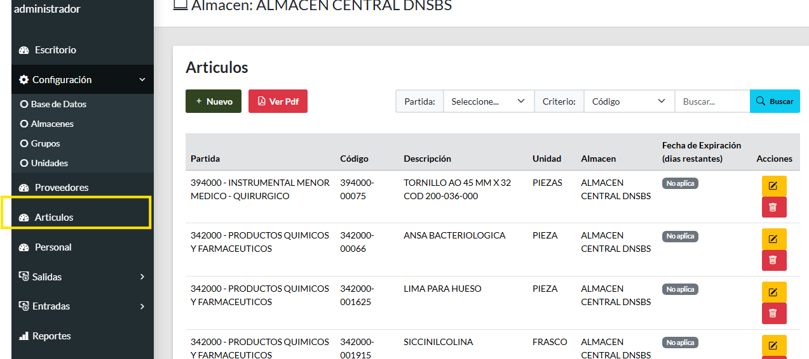
puede buscar con el número de articulo, o buscarlos por nombre con el botón buscar, en la parte izquierda tiene los botones Nuevo y Ver Pdf con estos botones puede crear una nuevo articulo y ver el resumen de Articulos en pdf
Seleccione en el boton de arriba "Nuevo"
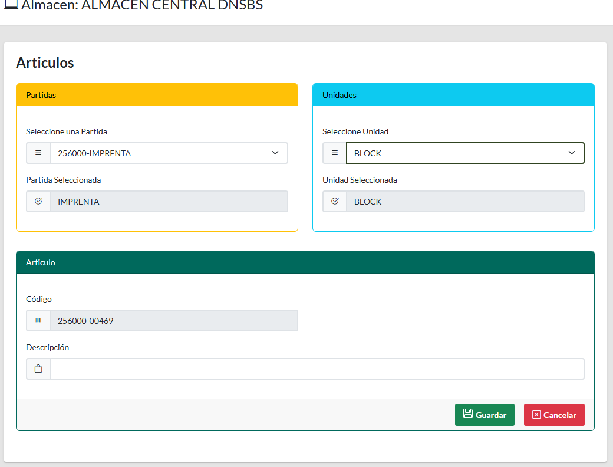
se muestra un formulario para la creación de nuevos articulos con el botón guardar, se guardara la información llenada
H: Gestión de Personal
Seleccione en el Menu de la izquierda "Personal"
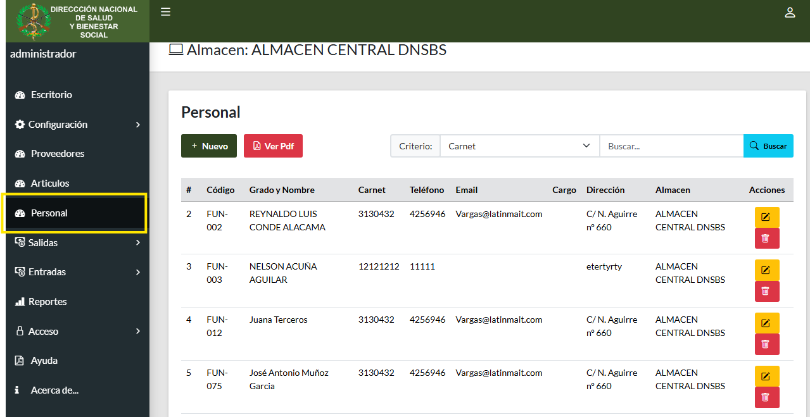
puede buscar con el carnet de la persona, o buscarlos por nombre con el botón buscar, en la parte izquierda tiene los botones Nuevo y Ver Pdf con estos botones puede crear una nuevo personal y ver el resumen del Personal en pdf
Seleccione en el boton de arriba "Nuevo"
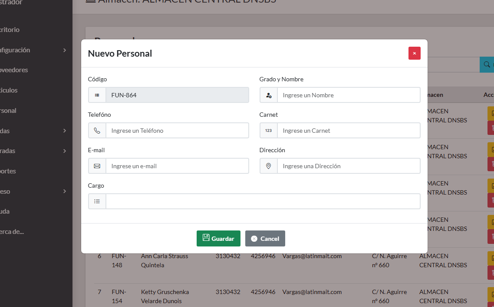
se muestra un formulario para la creación de nuevo personal con el botón guardar, se guardara la información llenada
F: Gestión de Salidas
En el menú de la izquierda seleccione la opción Salidas y Mis Salidas.
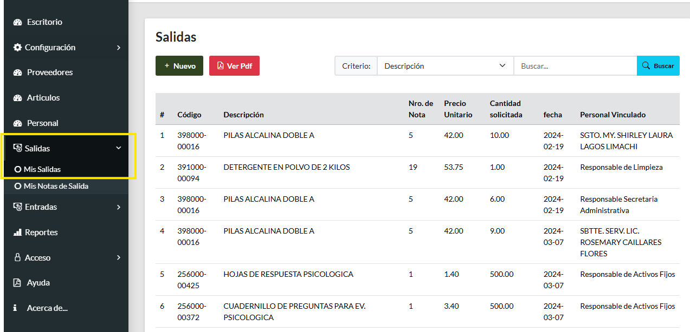
La tabla muestra las salidas por articulo y el personal asociado para la creación de una nueva salida presione el botón Nuevo, desplegará una nuevo formulario
En el boton de lista presionar Nuevo.
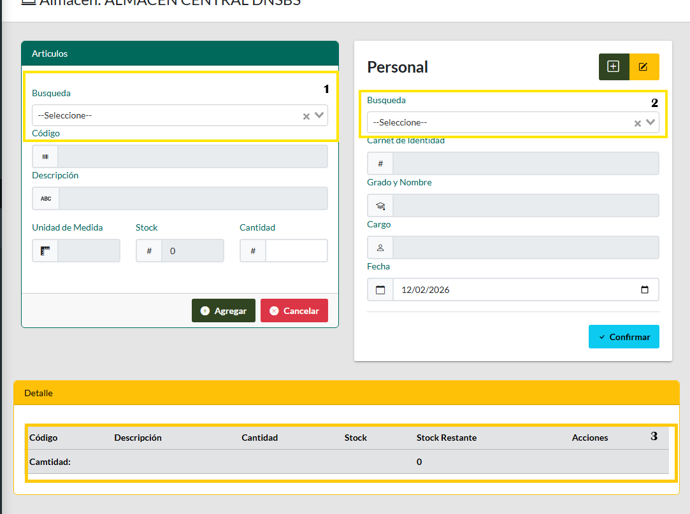
el formulario se divide en 3 partes, a la izquierda datos de los articulos, a la derecha datos del Personal y finalmente abajo la lista item que componen la salida
- 1. despliega la lista de articulos puede escrbir un articulo o su codigo buscara automaticamente mientras escribe, al seleccionar se cargaran los datos de dicho articulos
- 2. despliega la lista del Personal al igual que articulos trae los datos del personal seleccionado, en esta tarjeta puede crear o editar al provedor.
- 3. la lista se ira llenando cada vez que presione el boton Agrear permitiendo editar la cantidad o eliminar un item
una vez finalizado solo tendra que Confirmar y el sistema generara la nota respectiva en formato pdf
En el menu presionamos el boton Mis Notas de Salida.
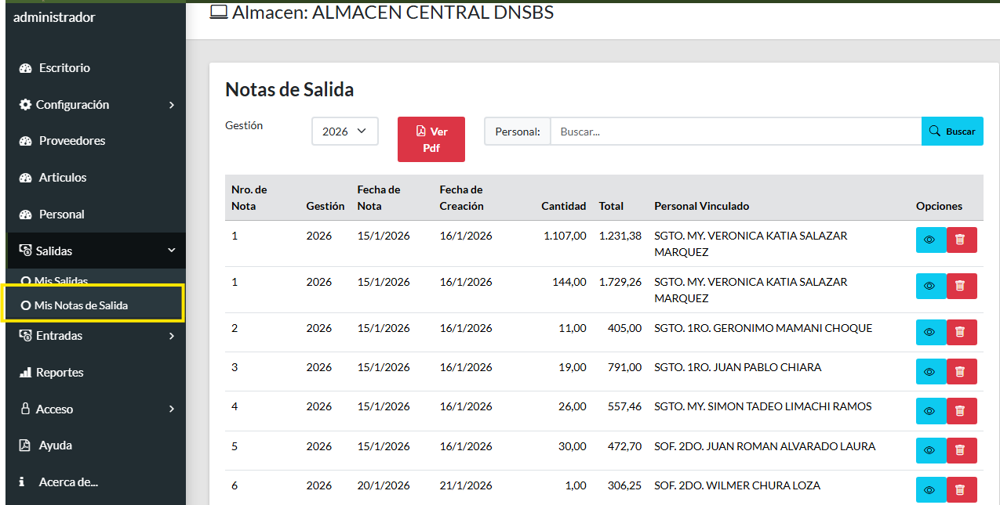
- el formulario ofrece filtrar por gestiones, ver notas emitidas y eliminarlas con los botones a la izquierda de la tabla
- el boton Ver Pdf muestra el resumen de todas las notas emitidas durante la gestión seleccionada
- Puede buscar por provedor y se actualizará la tabla con dicho filtro
G: Gestión de Entradas
En el menú de la izquierda seleccione la opción Entradas y Mis Entradas.
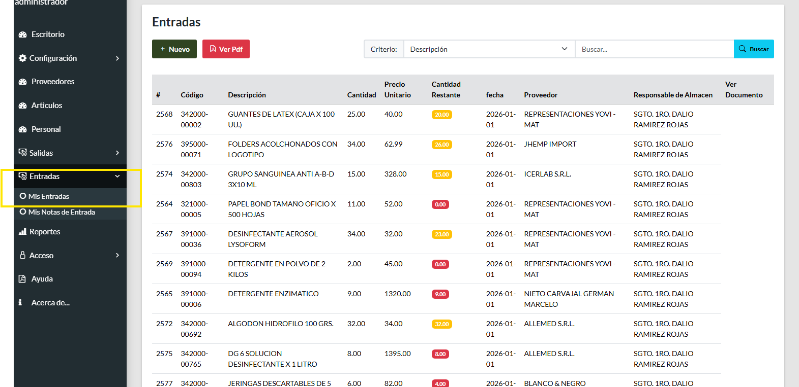
La tabla muestra las Entradas por articulo y el personal asociado para la creación de una nueva entrada, en la tabla muestra la cnatidad de articulos resaltados con naranja cuando el margen aun es mediano, rojo cuando ya no tenemos existencias o se consumieron en las salidas.
En el boton de lista presionar Nuevo.
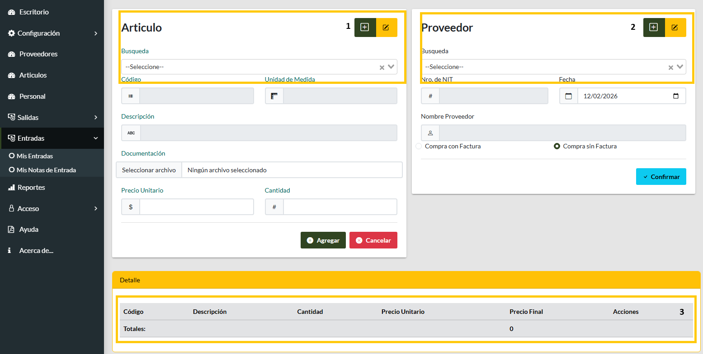
el formulario se divide en 3 partes, a la izquierda datos de los articulos, a la derecha datos del provedor y finalmente abajo la lista item que componen la salida
- 1. despliega la lista de articulos puede escrbir un articulo o su codigo buscara automaticamente mientras escribe, al seleccionar se cargaran los datos de dicho articulos, los botones encima de la tarjeta puede crear un nuevo articulo o editar el mismo
- 2. despliega la lista de provedores al igual que articulos trae los datos del provedor seleccionado, en esta tarjeta puede crear o editar al provedor.
- 3. la lista se ira llenando cada vez que presione el boton Agrear permitiendo editar la cantidad o eliminar un item
una vez finalizado solo tendra que Confirmar y el sistema generara la nota respectiva en formato pdf
En el menu presionamos el boton Mis Notas de Entrada.
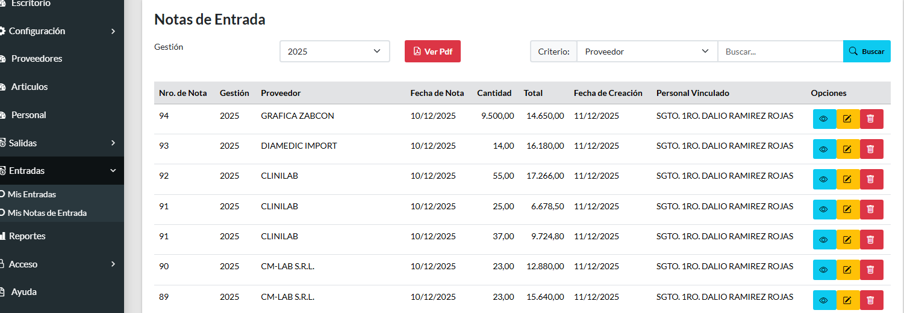
- el formulario ofrece filtrar por gestiones, ver notas emitidas y eliminarlas con los botones a la izquierda de la tabla, boton naranja permite agregar datos de factura si no los pusimos al crear la nota de entrada.
- el boton Ver Pdf muestra el resumen de todas las notas emitidas durante la gestión seleccionada
- Puede buscar por provedor y se actualizará la tabla con dicho filtro
H: Usuarios
En el menú de la izquierda seleccione la opción Usuarios.
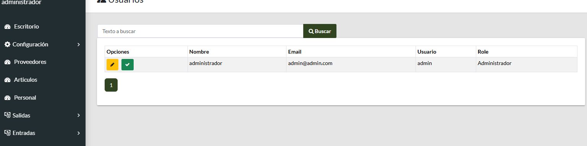
Este módulo está disponible únicamente para los Administradores. Aquí se gestiona la lista de usuarios del sistema, incluyendo la creación de nuevos perfiles, la asignación de roles y la edición de información existente. De esta manera se garantiza un control adecuado de accesos y responsabilidades dentro de la plataforma.
I: Reportes
En el menú de la izquierda seleccione la opción Reportes.
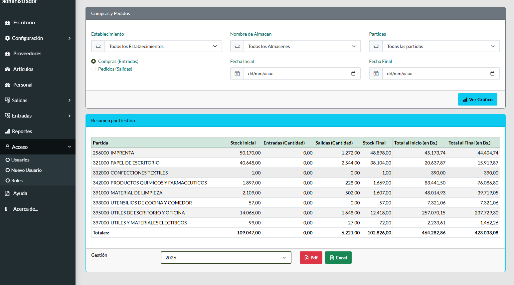
En esta sección se generan los reportes institucionales a partir de las distintas tablas de la base de datos. Los reportes permiten visualizar información consolidada sobre articulos, partidas, almacenes, en la parte superior puede generar reportes con filtros de almacenes, establecimientos, partidas y fechas, en la parte inferior puede generar reportes por gestion y exportarlos en formato xlsx y pdf. facilitando la toma de decisiones y el cumplimiento de auditorías internas y externas.